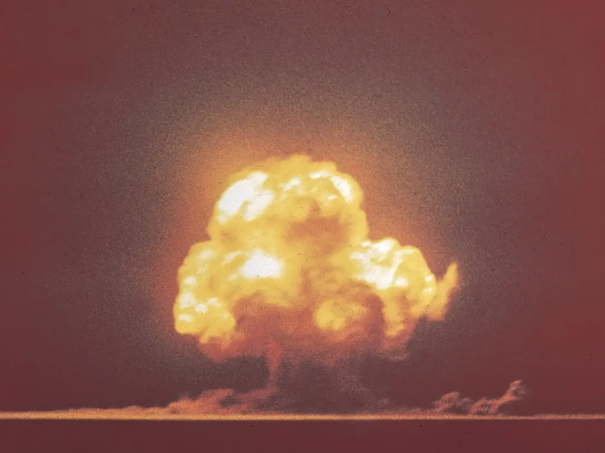

Energy Changes & Rates of Reactions
"Energy Changes & Rates of Reactions" is a vital topic within chemistry that delves into the dynamics of chemical reactions, particularly focusing on the energy transformations involved and the speed at which reactions occur. Here's a succinct summary: Energy Changes in Reactions: Chemical reactions involve the breaking and forming of bonds between atoms and molecules. These processes are accompanied by changes in energy, which can either be absorbed (endothermic) or released (exothermic). Understanding these energy changes provides insights into the thermodynamics of reactions and their feasibility. Activation Energy: Reactions do not proceed instantaneously; they require a certain amount of energy to overcome a barrier called activation energy. This energy is needed to initiate the reaction by destabilizing existing bonds before new ones can form. Factors such as temperature, concentration, and catalysts influence the activation energy and, consequently, the reaction rate. Reaction Rates: The rate of a chemical reaction is a measure of how quickly reactants are converted into products. It is determined by the frequency of successful collisions between reacting particles and the energy they possess to overcome the activation energy barrier. Factors such as temperature, concentration, surface area, and catalysts affect reaction rates by altering these collision parameters. Equilibrium: In reversible reactions, where products can react to form reactants, a state of equilibrium is reached when the rates of the forward and reverse reactions are equal. At equilibrium, the concentrations of reactants and products remain constant over time, although the reactions continue to occur. The position of equilibrium can be influenced by factors such as temperature, pressure, and concentration. Understanding the energy changes and rates of reactions is crucial for predicting reaction outcomes, optimizing reaction conditions, and designing efficient chemical processes in various fields such as industrial chemistry, environmental science, and biochemistry.
Read the full article